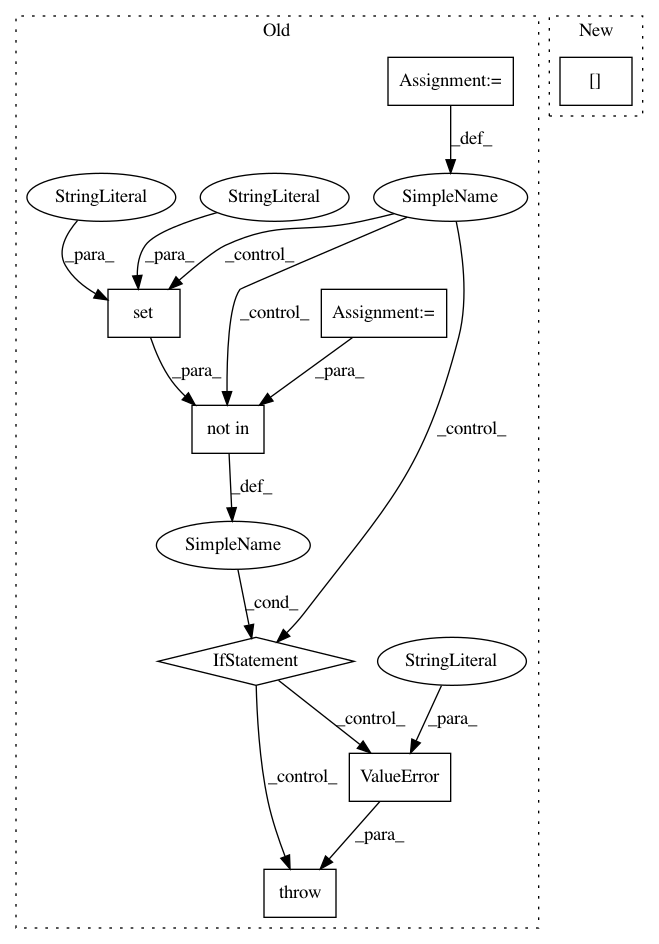

023331ec2a7b0086abfc81eca16c84a1692ee653,keras/layers/convolutional.py,Cropping2D,__init__,#Cropping2D#Any#Any#,1754
Before Change
def __init__(self, cropping=((0, 0), (0, 0)), data_format="default", **kwargs):
super(Cropping2D, self).__init__(**kwargs)
if data_format == "default":
data_format = K.image_data_format()
self.cropping = tuple(cropping)
if len(self.cropping) != 2:
raise ValueError("`cropping` must be a tuple length of 2.")
if len(self.cropping[0]) != 2:
raise ValueError("`cropping[0]` must be a tuple length of 2.")
if len(self.cropping[1]) != 2:
raise ValueError("`cropping[1]` must be a tuple length of 2.")
if data_format not in {"channels_last", "channels_first"}:
raise ValueError("data_format must be in {"channels_last", "channels_first"}.")
self.data_format = data_format
self.input_spec = [InputSpec(ndim=4)]
def build(self, input_shape):
After Change
if len(cropping) != 2:
raise ValueError("TODO")
height_cropping = conv_utils.normalize_tuple(
cropping[0], 2,
"1st entry of cropping")
width_cropping = conv_utils.normalize_tuple(
cropping[1], 2,
In pattern: SUPERPATTERN
Frequency: 3
Non-data size: 8
Instances
Project Name: keras-team/keras
Commit Name: 023331ec2a7b0086abfc81eca16c84a1692ee653
Time: 2017-02-09
Author: francois.chollet@gmail.com
File Name: keras/layers/convolutional.py
Class Name: Cropping2D
Method Name: __init__
Project Name: keras-team/keras
Commit Name: 023331ec2a7b0086abfc81eca16c84a1692ee653
Time: 2017-02-09
Author: francois.chollet@gmail.com
File Name: keras/layers/convolutional.py
Class Name: Cropping3D
Method Name: __init__
Project Name: catalyst-team/catalyst
Commit Name: c5c350cf9f9b576cc9de939e4dc308404eb48852
Time: 2019-05-28
Author: scitator@gmail.com
File Name: catalyst/dl/experiments/experiment.py
Class Name: ConfigExperiment
Method Name: get_optimizer_and_model